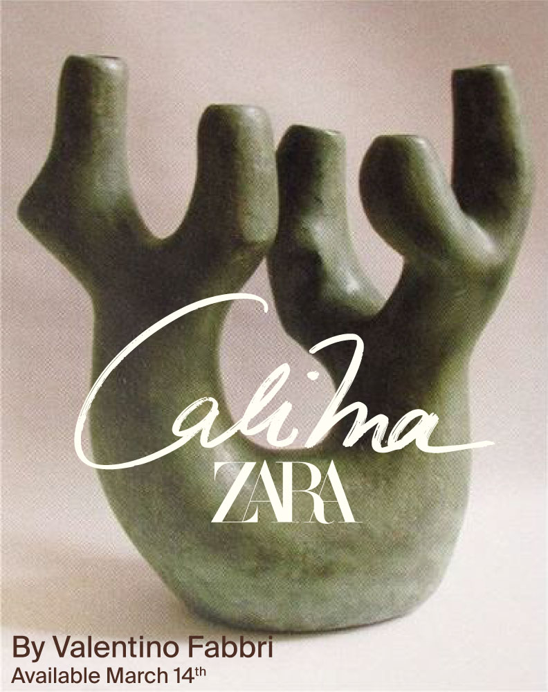
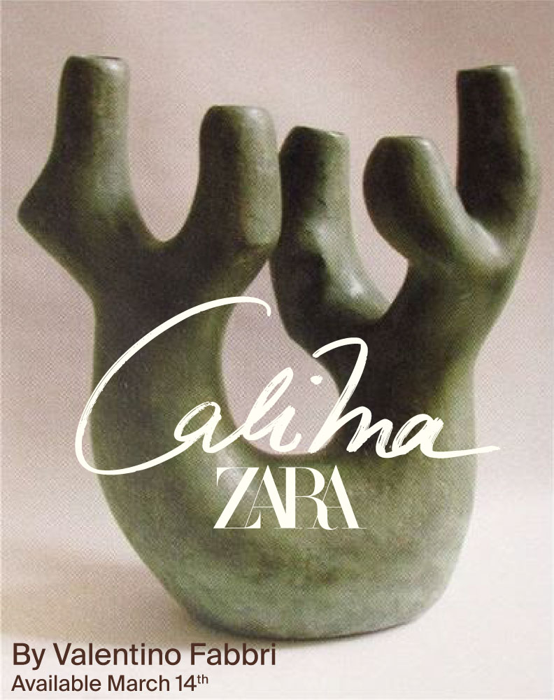

Colección cápsula Calima x Zara
Branding, Dirección de arte, Packaging
El corazón de la artesanía mediterránea
Colección cápsula inspirada en la artesanía y tradiciones mediterráneas. Para ello nos inspiramos en la Toscana y nos aliamos con sus más famosos artesanos para crear piezas únicas. Buscamos comunicar la sofisticación de la Toscana, con raíces en sus tradiciones italianas, mediante un diseño limpio, puro, elegante y artesanal.
Concepto: poner en valor los valores y tradiciones mediterráneos
 


Campaña para San Isidro
Diseño gráfico, Dirección de arte
San Isidro, Madrid al ritmo del Chotis
Proyecto innovador inspirado en la naturaleza y la tecnología. Buscamos crear una experiencia visual que combine elementos orgánicos con lo digital, logrando una interacción fluida entre los dos mundos.
Concepto: fusionar lo natural con lo digital en el diseño visual


Coworking The 12th
Diseño gráfico, Dirección de arte
Siéntate como en casa
Exploramos el concepto de sentirse como en casa, transformándolo en “sentarse como en casa”, demostrando nuestro carácter creativo e intentando reflejar ese confort y comodidad de nuestros espacios. Esto está acompañado por el uso reiterado de las sillas como recurso gráfico.
Concepto: la constancia, la cooperación y la pasión, así como el descanso y el bienestar.


Soy Isabel Barrena
Diseñadora gráfica e Ilustradora
"Design creates culture.
Culture shapes values.
Values determine the future."
Robert L. Peters.
Soy una persona trabajadora, creativa y resolutiva, me adapto rápido al entorno de trabajo. Soy una persona empática, comunicativa y con grandes habilidades para el trabajo en equipo.
Me considero una persona muy sociable, no me cuesta adaptarme a diferentes situaciones y trabajo bien bajo estrés y también me considero una persona resolutiva.

Si te ha gustado mi trabajo
No dudes en contactar conmigo.
contactme@isabelbarrena.com
Teléfono
555-666-888
Ubicación
Madrid, Spain